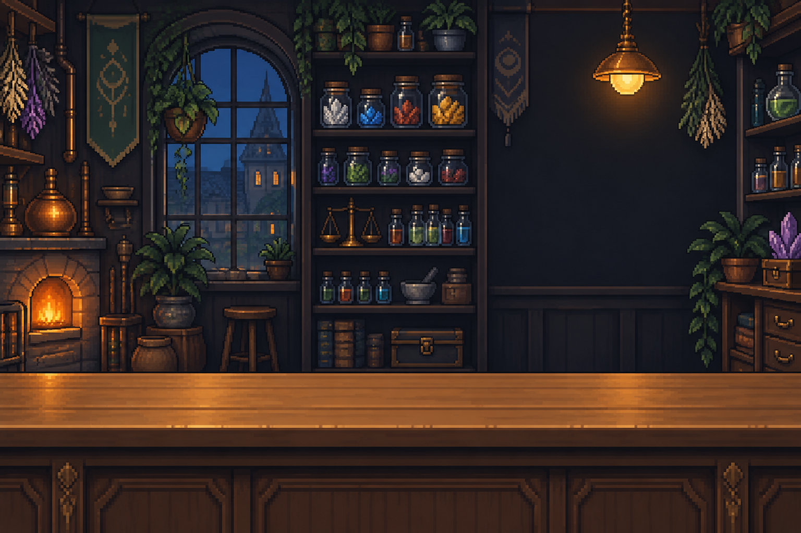

오늘의 영업을 마쳤습니다
이슬 숲미확인 시료를 조사해 보세요
숲을 불러오는 중…
처음 보는 시료가 있네요. 옆으로 이동해 조사하거나 시료를 클릭해 보세요.
WASD / 방향키 이동
Space 주변 조사 E 가방
숲에 새로운 아침이 밝았습니다
오늘의 탐사를 시작해 볼까요?

오늘의 영업을 마쳤습니다
처음 보는 시료가 있네요. 옆으로 이동해 조사하거나 시료를 클릭해 보세요.
WASD / 방향키 이동
Space 주변 조사 E 가방